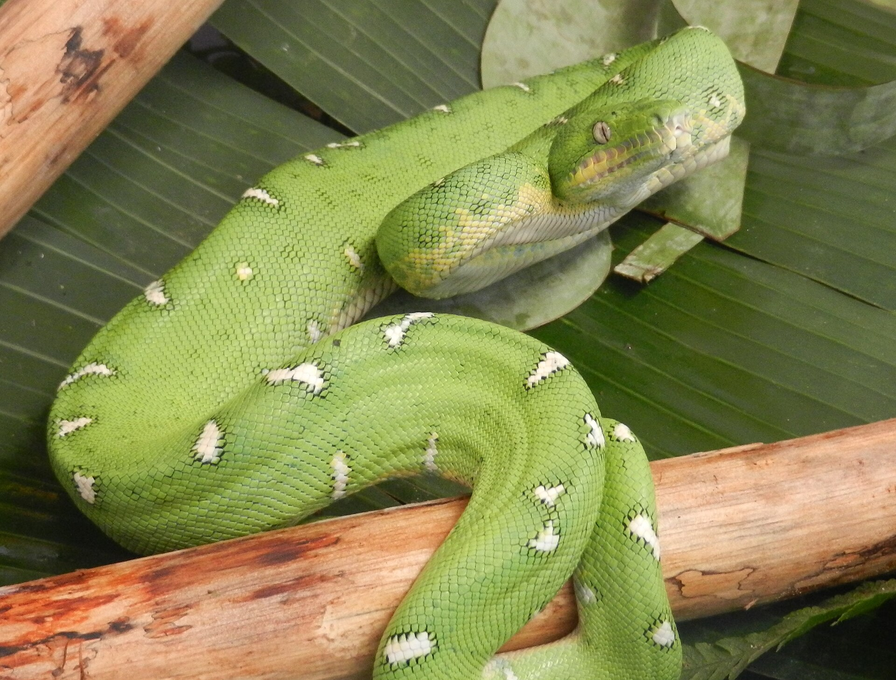
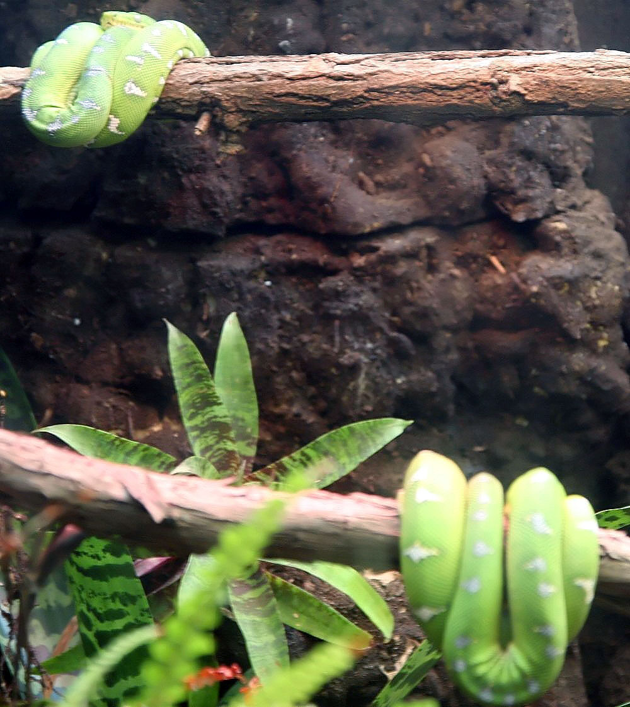
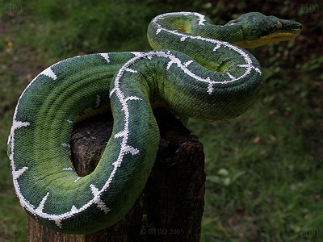

NAJWAŻNIEJSZY WNIOSEK
Corallus batesii nie jest odmianą barwną ani lokalizacją Corallus caninus. Od 2009 roku jest ponownie uznawany za odrębny gatunek Amazonii, rozpoznany na podstawie geograficznego układu cech morfologicznych, wcześniejszych danych mitochondrialnych i analizy 192 okazów.
„Amazon Basin” opisuje dziś przede wszystkim gatunek Corallus batesii. Parametrów z hodowli C. caninus nie wolno kopiować automatycznie — i odwrotnie.
C. batesii został rewalidowany przez Hendersona, Passosa i Feitosę w 2009 roku.
Dzień spędza zwykle w charakterystycznej pętli na podporze; aktywność łowiecka rośnie nocą.
Temperatura, nawodnienie, wilgotność i ruch powietrza muszą działać razem.
NAZWA Z HISTORIĄ
Od Chrysenis batesii do „Amazon Basin”
John Edward Gray opisał ten takson w 1860 roku jako Chrysenis batesii. Nazwa honoruje Henry’ego Waltera Batesa — brytyjskiego przyrodnika, który spędził jedenaście lat w brazylijskiej Amazonii. Później batesii włączono do szeroko rozumianego Corallus caninus, dlatego starsza literatura i dawne rodowody często używają nazw „Amazon Basin C. caninus” albo po prostu „Basin”.
Praca Hendersona, Passosa i Feitosy z 2009 roku wykazała, że populacje basenu Amazonki tworzą odrębną jednostkę różniącą się m.in. liczbą łusek na pysku oraz liczbą plam bocznych. Autorzy przywrócili nazwę Corallus batesii. To ważne przy czytaniu źródeł: publikacja sprzed 2009 roku może omawiać dzisiejsze batesii, choć w tytule widnieje caninus.
W handlu nadal spotyka się skrótowe „batesi”. Aktualna nazwa przyjęta w Reptile Database i literaturze taksonomicznej ma dwa „i”: batesii.
AMAZONIA, NIE GUIANA SHIELD
Gdzie żyje i jak korzysta z lasu
Reptile Database podaje C. batesii z Brazylii, Peru, Boliwii, Ekwadoru i Kolumbii, od nizin do około 1000 m n.p.m. Rdzeń zasięgu leży w Amazonii na południe od Amazonki i na zachód od Rio Negro, choć współczesne zestawienia wskazują także rekordy na północ od Amazonki po zachodniej stronie Rio Negro oraz marginalne stanowiska w Cerrado. Rzeki pomagają zrozumieć podział, lecz nie są prostą kreską identyfikującą każdego osobnika.
W Ekwadorze gatunek notowano w pierwotnych lasach nizinnych typu terra firme oraz w lasach sezonowo zalewanych. Jest silnie nadrzewny i trudny do wykrycia, ale określenie „wyłącznie korony drzew” byłoby zbyt proste: obserwowano go również na małych drzewach i młodych pniach, a po intensywnych deszczach także blisko ziemi. Dzień zwykle spędza nieruchomo zwinięty; nocą przyjmuje pozycję zasadzki, opuszczając głowę ku potencjalnej trasie ofiary.
Badanie młodych osobników utrzymywanych w zoo, opublikowane w 2025 roku, dobrze pokazuje, dlaczego etykieta „nieruchomy zasadzkarz” również jest skrótem. Zwierzęta pozostawały nieruchome przez 88,2% obserwacji, lecz przemieszczały się między miejscami zasadzki. Autorzy opisali młode raczej jako łowców mieszanych niż wyłącznie aktywnych albo wyłącznie czekających. To dane z warunków kontrolowanych, nie bezpośredni pomiar zachowania dzikiej populacji.
UPROSZCZONY SCHEMAT BIOGEOGRAFICZNY • NIE JEST MAPĄ PUNKTOWĄ
Status IUCN: Least Concern w ocenie z 2016 roku. Szeroki zasięg nie znosi lokalnych zagrożeń, takich jak utrata lasu, drogi i nielegalny odłów.

DWA GATUNKI • WIELE NAKŁADAJĄCYCH SIĘ CECH
Corallus batesii a Corallus caninus
W hodowli często mówi się: „Basin jest większy, ciemniejszy, ma pełny biały pas i jest spokojniejszy”. To użyteczny opis tendencji, lecz nie diagnoza gatunku. Pewniejsze rozróżnienie opiera się na pochodzeniu oraz zestawie cech, zwłaszcza łuskach pyska i plamach bocznych. Rozmiar, kolor i temperament pojedynczego zwierzęcia mogą wprowadzić w błąd.
| Cecha | Corallus batesii | Corallus caninus | Jak to interpretować |
|---|---|---|---|
| Zasięg | Basen Amazonki; 0–1000 m. | Guiana Shield; zwykle 0–200 m. | Pochodzenie jest silniejsze niż sam wygląd. |
| Łuski na pysku | 3–12; średnia 6,9. | 2–6; średnia 3,4. | Wartości pochodzą z pracy na 192 okazach; zakresy częściowo się nakładają. |
| Plamy boczne | 0–38; średnia 18,1. | 0–11; średnia 1,3. | To jedna z najważniejszych cech statystycznych, nie pojedynczy „znak firmowy”. |
| Pas kręgowy | Może być ciągły albo przerwany. | Ciągły pas nie występuje. | Brak pasa nie wyklucza batesii; sam pas nie zastępuje rodowodu. |
| Budowa i rozmiar | W hodowli zwykle opisywany jako masywniejszy i większy. | Zwykle smuklejszy i mniejszy. | Zakresy się nakładają. Opowieści o „9-stopowych Basinach” wymagają wiarygodnego pomiaru. |
| Barwa | Często głębsza zieleń, żółtszy brzuch, więcej bieli i ciemnego obramowania. | Często jaśniejsza zieleń i rozdzielone białe znaki. | Tendencje hodowlane; selekcja i zmienność osobnicza utrudniają ocenę. |
| Temperament | Doświadczeni hodowcy często opisują spokojniejsze zachowanie dzienne. | Częściej opisywany jako reaktywny. | To obserwacja hodowlana, nie cecha diagnostyczna. Nocny odruch pokarmowy obu jest bardzo szybki. |
„Każdy dorosły Basin ma 2,5–2,7 m”
Nie. Takie długości krążą w literaturze hobbystycznej, ale nie opisują typowego zwierzęcia. Synteza Reptiles of Ecuador podaje maksymalną udokumentowaną długość całkowitą 194,5 cm dla samicy. Rekordowe deklaracje bez metody pomiaru i pochodzenia należy traktować ostrożnie.


CZEKAĆ, UDERZYĆ, UTRZYMAĆ
Polowanie i dieta w naturze
C. batesii jest nocnym drapieżnikiem zasadzającym się na ofiarę. Masywna głowa, długie zakrzywione zęby i mocny przedni odcinek ciała pomagają przechwycić ssaka bez utraty oparcia na gałęzi. Analiza wyłącznie terenowych danych pokarmowych Hendersona i Pauersa wskazuje, że dorosłe C. batesii i C. caninus specjalizują się głównie w gryzoniach i torbaczach. U młodego batesii stwierdzono natomiast szczątki młodego Bothrops atrox.
Przez lata powtarzano, że „zielone boa jedzą ptaki”, chociaż w materiale terenowym brakowało takiego dowodu dla batesii. W 2024 roku badaczki Instituto Butantan opisały pierwszy udokumentowany przypadek ptasiej ofiary: pióra znaleziono w kale dorosłego samca 69 dni po przejęciu przez IBAMA, a w niewoli zwierzę otrzymywało wyłącznie myszy. To rozszerza znane menu, ale nie zmienia wniosku, że ssaki są najlepiej udokumentowaną podstawą diety dorosłych.
Dominują w opublikowanych danych o dorosłych osobnikach.
Znany jest m.in. przypadek młodego Bothrops atrox.
Pierwszy potwierdzony rekord nie czyni z gatunku wyspecjalizowanego ptakożercy.
HODOWLA TO INŻYNIERIA ŚRODOWISKA
Nie kopiuj liczby — zbuduj działający system
Wartości używane przez doświadczonych hodowców różnią się, ponieważ różnią się pomieszczenia, wentylacja, objętość terrariów, źródła ciepła i miejsce pomiaru. Jeden współczesny hodowca utrzymuje całe pomieszczenie na 60–65% RH i prawie nie zrasza. Steve Volk opisuje w swoim systemie wyższe wartości dzienne, spadek w nocy oraz kontrolowane nawilżanie podłoża. Obaj osiągają sukces, ponieważ liczba jest częścią konkretnego układu — nie samodzielnym przepisem.
Temperatura
Zapewnij kontrolowany gradient i unikaj przegrzewania. W aktualnie opisanym systemie jednego hodowcy pomieszczenie stopniowo dochodzi do około 29°C w dzień i 25,5°C w nocy; inni tworzą szerszy gradient lokalnie. Czujnik i termostat muszą mierzyć strefę realnie używaną przez węża.
Wilgotność + powietrze
Nie zamieniaj wysokiego RH w zamknięte, stale mokre pudełko. Powierzchnie powinny okresowo wysychać, a powietrze być wymieniane. Skrajne cykle „bardzo sucho–bardzo mokro” są równie problematyczne jak zastój.
Nawodnienie
Świeża woda przy poziomie żerdzi jest praktycznym standardem w wielu udanych hodowlach. Kontroluj rzeczywiste picie, jakość wylinki i nawodnienie, zamiast zakładać je na podstawie wyświetlacza higrometru.
Żerdzie i przestrzeń
Potrzebne są pewne, łatwe do demontażu podpory o kilku średnicach; przynajmniej jedna cieńsza niż połowa średnicy ciała. Terrarium ma umożliwiać zmianę pozycji i strefy, a nie tylko efektowną pętlę na jednej rurze.
Karmienie
Mała ofiara, długi odstęp, zapis posiłków i wypróżnień. W jednym z aktualnych protokołów dorosłe karmione są co 3–6 tygodni; Steve Volk opisuje około jednego posiłku miesięcznie i przerwę, jeśli zwierzę nie wypróżniło się po kilku karmieniach.
Obsługa
Minimalna i przewidywalna. Wyjmowana żerdź pozwala przenieść zwierzę bez odrywania go siłą. Szarpanie za ogon może uszkodzić delikatne struktury podpierające nadrzewnego węża.
Bo sprawdzony hodowca A raportuje stabilne 60–65%, a hodowca B prowadzi cykl około 60–80% w innym typie pomieszczenia. Wspólny mianownik to nie identyczna liczba, lecz nawodnienie, wentylacja, stabilność, właściwa temperatura i brak permanentnie mokrych powierzchni. Parametrów C. caninus z wcześniejszej publikacji o sezonowości nie przenosimy wprost na C. batesii.
BŁĄD WIDOCZNY Z OPÓŹNIENIEM
Dlaczego uchodzą za trudne
Stabilny, urodzony w niewoli osobnik nie musi być „niemożliwym” wężem. Trudność polega na tym, że metabolizm jest wolny, margines błędu w połączeniu temperatury, wilgotności i karmienia jest niewielki, a skutek złego systemu może pojawić się dopiero po tygodniach lub miesiącach.
Ciepło bez drogi ucieczki
Zbyt wysoka temperatura zwiększa obciążenie fizjologiczne i ryzyko problemów trawiennych. Nadrzewny wąż musi móc opuścić strefę ciepła bez schodzenia na dno.
Regurgitacja i zaleganie
„Regurgitation syndrome” to opis problemu, nie jedna diagnoza. Zbyt duża lub zbyt częsta ofiara jest ważnym czynnikiem ryzyka, ale powtarzające się zwracanie pokarmu wymaga lekarza weterynarii i diagnostyki.
Wysokie RH ≠ nawodniony wąż
Brudna lub trudno dostępna miska, brak obserwacji picia i zbyt gwałtowne wahania mogą prowadzić do odwodnienia mimo wilgotnego terrarium.
Mokro i bez ruchu powietrza
Stała kondensacja oraz zastój sprzyjają problemom skórnym i oddechowym. Należy poprawić konstrukcję systemu, a nie tylko rzadziej uruchamiać zraszacz.
Import zamiast stabilnej CBB
Zwierzęta odłowione lub o niejasnej historii zwiększają ryzyko pasożytów, odwodnienia, stresu i błędnej identyfikacji. Kwarantanna oraz badanie u lekarza od gadów są konieczne.
Start i dokumentacja
Młode wymagają małych, kontrolowalnych środowisk, odpowiednich żerdzi i cierpliwego rozpoczęcia karmienia. Nieudokumentowane „skróty” łatwo stają się problemem następnego właściciela.
Sygnały alarmowe: powtarzająca się regurgitacja, świsty, oddychanie z otwartym pyskiem, wydzielina, nietypowe moczenie się, obrzęk, trwała utrata masy lub zmiany skórne wymagają konsultacji z lekarzem weterynarii zajmującym się gadami. Ta publikacja nie zastępuje diagnostyki.
CENA JEST SKUTKIEM BIOLOGII I RYNKU
Dlaczego są rzadkie, drogie i tak pożądane
- wolny wzrost i późne dojrzewanie — współcześni hodowcy mówią zwykle o gotowości samic dopiero około 5–6 roku;
- samica nie powinna być automatycznie rozmnażana co roku, a każda próba nie kończy się żywym miotem;
- miot jest ograniczony, neonaty wymagają czasu, miejsca i indywidualnych rekordów;
- kontrolowane pomieszczenie, kwarantanna, weterynaria i wieloletnie utrzymanie rodziców kosztują;
- udokumentowane CBB i wiarygodny rodowód są znacznie rzadsze niż efektowna etykieta handlowa.
- głęboka zieleń, biały grzbiet, żółty brzuch i ogromny kontrast dają niemal rzeźbiarską sylwetkę;
- mityczny status „crown jewel” budowany przez dekady hodowli;
- reputacja większego i spokojniejszego z dwóch zielonych Corallus;
- długowieczny projekt dla hodowcy, który ceni proces, rodowód i obserwację bardziej niż częste rozmnażanie;
- ograniczona podaż przy międzynarodowym popycie.
Corallus batesii jest objęty załącznikiem II CITES w ramach wpisu rodziny Boidae. Wymagania dokumentacyjne zależą od państwa i rodzaju transakcji, dlatego kupujący powinien otrzymać dowód legalnego pochodzenia i sprawdzić aktualne przepisy przed zakupem lub przewozem. Nie kupuj zwierzęcia, którego historia zaczyna się od „papierów nie ma, ale jest pewne”.
Nie podajemy jednej „światowej ceny”. Wartość zmieniają kraj, wiek, płeć, fenotyp, rodowód, zdrowie i realna podaż. Stała jest tylko zasada: najtańsze zwierzę o niejasnym pochodzeniu często okazuje się najdroższym projektem.
ODPOWIEDZIALNY ZAKUP
Dla kogo jest Corallus batesii?
potrafisz utrzymać stabilny gradient, mierzyć warunki w kilku punktach, dokumentować karmienie i wypróżnienia oraz czekać bez „dokarmiania na zapas”.
masz przygotowane duże, bezpieczne terrarium, plan kwarantanny, lekarza od gadów i budżet na awarie — zanim kupisz węża.
szukasz gatunku do częstego dotykania, szybkiego wzrostu, regularnych miotów albo chcesz dopiero na zwierzęciu uczyć się podstaw kontroli środowiska.
jedynym argumentem jest cena odsprzedaży lub biały pas. Najcenniejszy jest zdrowy, legalny i udokumentowany osobnik — nie obietnica „super high white”.
Poproś o historię
Data urodzenia, rodzice, zdjęcia miotu, karmienie, wylinki, wypróżnienia, masa i leczenie.
Sprawdź legalność
Dokument pochodzenia, dane sprzedawcy, numer identyfikacyjny — zgodnie z wymaganiami miejsca zakupu.
Oceń zachowanie
Spokojny dzień nie wyklucza bardzo silnego nocnego odruchu pokarmowego. Naucz się bezpiecznej rutyny.
Kwarantanna
Osobne narzędzia, obserwacja, badanie kału i konsultacja weterynaryjna przed kontaktem z kolekcją.
KRÓTKO I KONKRETNIE
Najczęstsze pytania
Czy Corallus batesii jest trudniejszy od C. caninus?
Nie da się tego uczciwie sprowadzić do rankingu. Batesii jest zwykle większy i wymaga większej infrastruktury, ale dobre CBB bywa stabilne. Dla obu kluczowe są temperatura, nawodnienie, wentylacja, ostrożne karmienie i pochodzenie.
Czy ciągły biały pas zawsze oznacza batesii?
Nie. U batesii może występować, a u caninus ciągły pas nie jest cechą typową, lecz oznaczenie powinno opierać się na pochodzeniu i zestawie cech. Brak pasa nie wyklucza batesii.
Czy Basin potrzebuje stale 90% wilgotności?
Nie ma wiarygodnej podstawy do uniwersalnego „90% przez całą dobę”. Doświadczeni hodowcy odnoszą sukces przy różnych odczytach, jeżeli system zapewnia świeżą wodę, stabilność, wymianę powietrza i właściwą temperaturę bez permanentnie mokrych powierzchni.
Czy można podawać ptaki?
Pierwszy terenowy dowód ptasiej ofiary opublikowano dopiero w 2024 roku. Nie oznacza to potrzeby karmienia ptakami. Sprawdzone CBB są z powodzeniem utrzymywane na odpowiednio dobranych gryzoniach.
Czy jest bezpieczny do obsługi?
Nie jest jadowity, ale ma długie, zakrzywione zęby i bardzo szybki odruch pokarmowy. Obsługa powinna być rzadka, spokojna i oparta na wyjmowanej żerdzi, nie na odrywaniu zwierzęcia siłą.
Czy batesii i caninus można krzyżować?
Krzyżówki są znane w hodowli, lecz nie powinny być sprzedawane jako czysty gatunek. Bezwarunkowe oznaczenie hybrydy i pełna dokumentacja są podstawą uczciwego obrotu oraz ochrony czystych linii.
STANDARD GONZO EXOTICS
Najpierw biologia. Potem legenda.
Corallus batesii jest marzeniem terrarysty nie dlatego, że jest drogi, ale dlatego, że łączy wyjątkową historię naturalną z hodowlą wymagającą dojrzałych decyzji. Najlepszy opiekun nie ściga rekordów wzrostu ani wilgotności. Buduje stabilny system, dokumentuje fakty i pozwala wężowi żyć powoli.
PORÓWNAJ Z PUBLIKACJĄ O CORALLUS CANINUS →BIBLIOGRAFIA • PRAKTYKA • PRAWA DO ZDJĘĆ
Na czym oparto publikację
Dane taksonomiczne i terenowe mają pierwszeństwo przed opisami handlowymi. Protokoły hodowlane przedstawiono jako systemy konkretnych hodowców, nie uniwersalne recepty. Rozbieżności pozostawiono widoczne, a wspólne zasady wyciągnięto dopiero po porównaniu źródeł.
- Henderson R.W., Passos P., Feitosa D. (2009), Geographic Variation in the Emerald Treeboa, Corallus caninus, Copeia 2009(3): 572–582.
- The Reptile Database — Corallus batesii, taksonomia, diagnoza, zasięg i bibliografia; dostęp 17.08.2026.
- The Reptile Database — Corallus caninus, zasięg porównawczy i diagnoza; dostęp 17.08.2026.
- Duque-Torres D., Aponte-Gutiérrez A., Molina-Moreno T. (2024), Bates’ Emerald Tree-Boa, Reptiles of Ecuador, DOI 10.47051/HTXZ2458.
- Henderson R.W., Pauers M.J. (2012), On the Diets of Neotropical Treeboas, South American Journal of Herpetology 7: 172–180.
- Albuquerque C.C., Travaglia-Cardoso S.R. (2024), First record of avian prey ingestion by Corallus batesii, Herpetology Notes 17: 13–15.
- Sethna J.M. i in. (2025), Diel Activity and Spatial Use of Zoo-Housed Juvenile Amazon Basin Emerald Treeboas, Zoo Biology; zachowanie młodych w warunkach kontrolowanych.
- Steve Volk, Amazon Basins — Husbandry, wieloletni system hodowli i rozmnażania C. batesii>; dostęp 17.08.2026.
- Steve Volk, Amazon Basins — Facilities, konstrukcja środowisk, żerdzie, ogrzewanie i nawodnienie; dostęp 17.08.2026.
- Amazon Basin Emerald Tree Boas — Husbandry Guide, współczesny niezależny protokół hodowlany; dostęp 17.08.2026.
- Stan Chiras (1998), The Emerald Tree Boa — Natural History and Captive Management, źródło historyczne czytane z uwzględnieniem dawnej taksonomii.
- van de Water H. (2015), Captive management and breeding of Corallus caninus / Corallus batesii, Litteratura Serpentium 35(3): 117–127.
- CITES — aktualne załączniki; C. batesii objęty Appendix II w ramach wpisu Boidae spp., dostęp 17.08.2026.
Fotografie wykorzystane na licencjach Creative Commons
- Kyle Van Houtan, Corallus batesii, Peru — CC BY 4.0; plik zmniejszony do 1920 px.
- Erfil, Corallus batesii, Manu Learning Centre — CC BY-SA 3.0; plik zmniejszony do 1920 px.
- David J. Stang, Corallus batesii, Smithsonian National Zoological Park — CC BY-SA 4.0.
- J.M. Polanco / ETBO, Corallus batesii w hodowli — CC BY-SA 3.0 / GFDL.
Ostatnia weryfikacja źródeł: 17 sierpnia 2026. Publikacja edukacyjna; nie zastępuje oceny konkretnego zwierzęcia przez lekarza weterynarii ani sprawdzenia aktualnych przepisów.